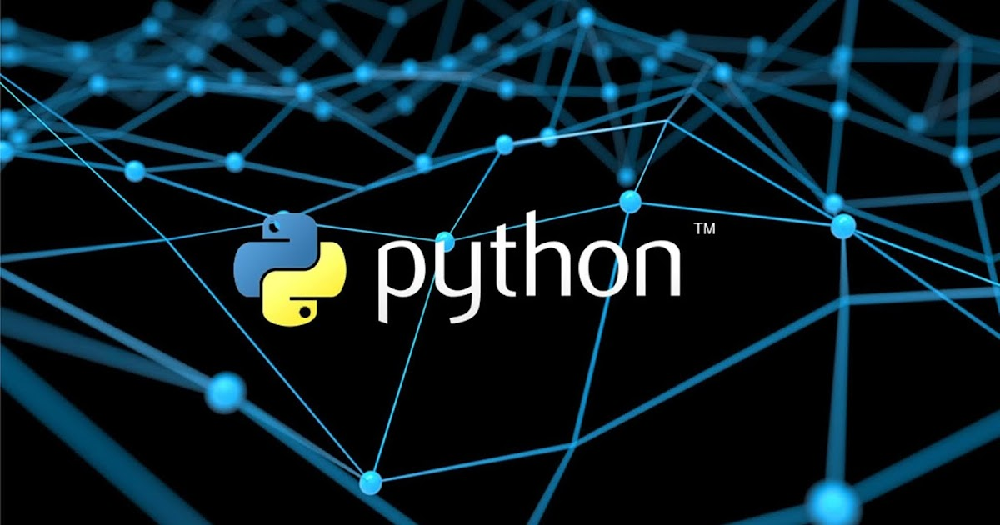
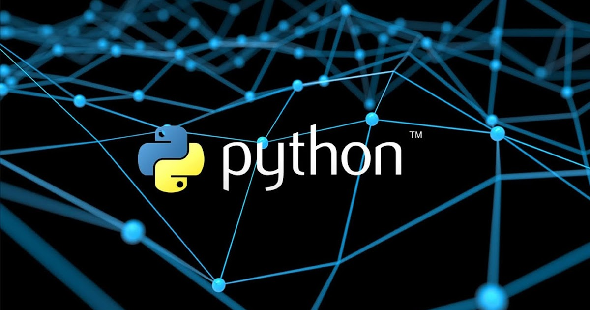
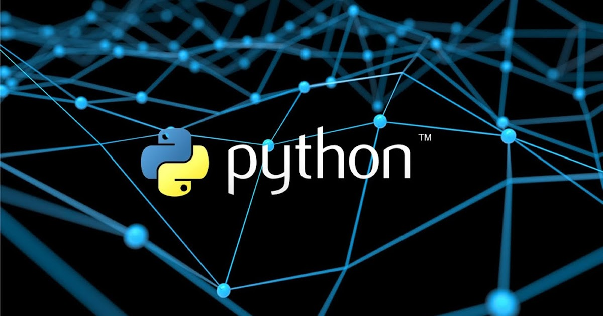

Dasturlash — kompyuterlar va boshqa mikroprotsessorli elektron mashinalar uchun dasturlar tuzish, sinash va oʻzgartirish jarayonidan iborat. Odatda dasturlash yuqori saviyali dasturlash tillari (PHP, Java, C++, Python) vositasida amalga oshiriladi. Bu dasturlash tillarining semantikasi odam tiliga yaqinligi tufayli dastur tuzish jarayoni ancha oson kechadi.
Dasturlash 1. Elektron mashinalarda masalalarni yechish hamda ularda har xil aqliy mehnat turlarini bajarish nazariyasi va usullarini ishlab chiqish bilan shugʻullanadigan fan; algoritmlar nazariyasining amaliy boʻlimi; insonning mashina bilan aloqa qilish vositasi.

Dasturlash - bu turli xil vazifalarni bajarish uchun kompyuterga buyruqlarni yozish san'ati va fani. Bu vazifa, masalan, o'yin o'ynash, hisoblash yoki Internetdagi biror websaytdan foydalanish bo'lishi mumkin. Biroq, biz dasturlarni yozishdan oldin, biz dastur nima ekanligini va kompyuter biz berayotgan buyruqlarni qanday bajarishini tushunishimiz kerak.Bu bo'limda biz dasturlar va dasturlash asoslarini batafsilroq o'rganamiz.
 
